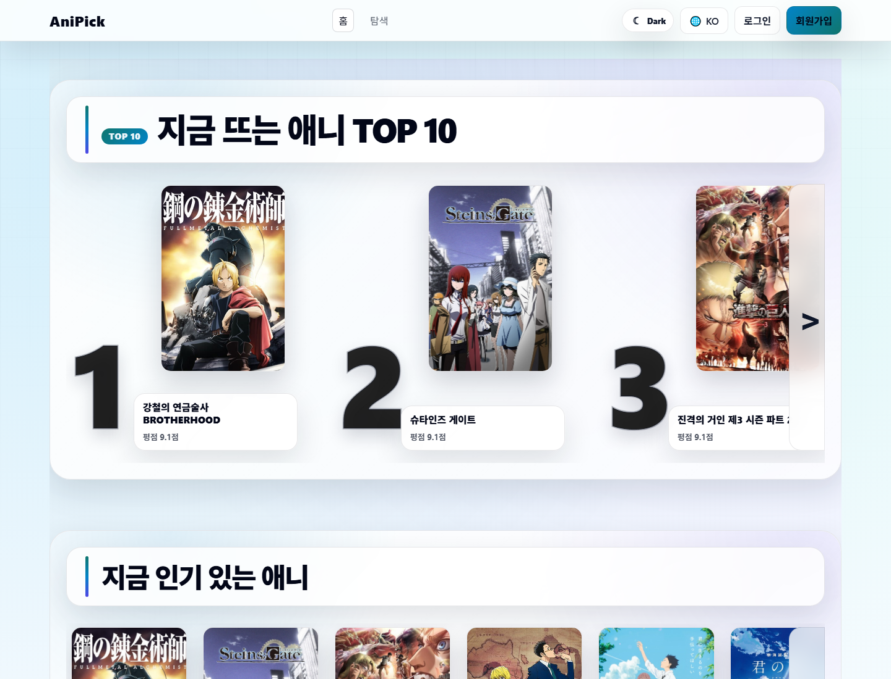
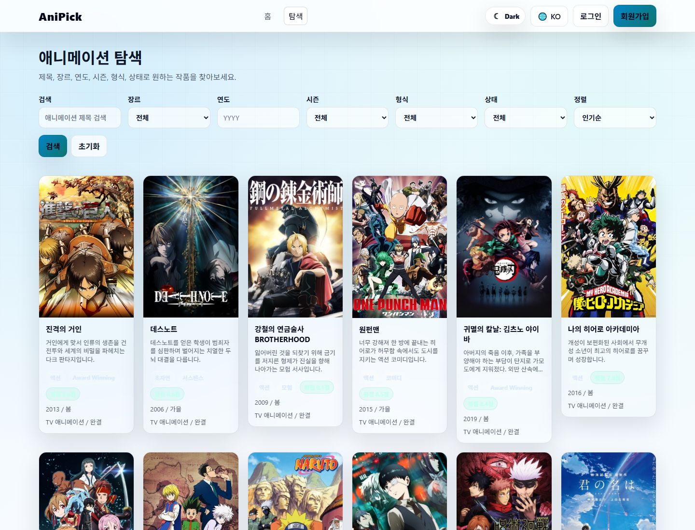
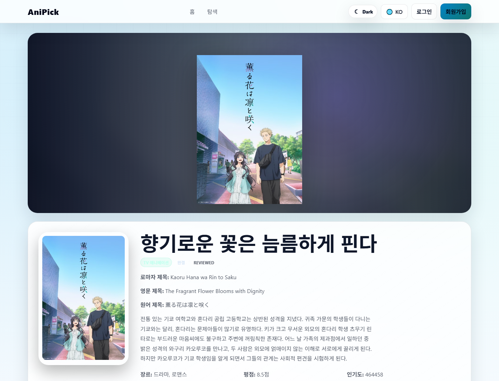
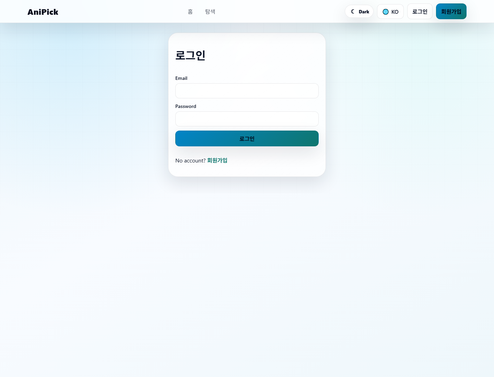

AniPick 전체 기능, Docker 실행, DB 보강, 번역 검증 보고서
작성일: 2026-06-04
AniPick은 애니메이션 추천, 탐색, 리뷰, 개인 시청 상태 관리, 관리자 운영 기능을 제공하는 풀스택 웹 서비스입니다. 이 보고서는 실제 Docker 실행 상태와 한국어 번역 시나리오 검증 캡쳐를 포함합니다.
3 ServicesPostgreSQL, Backend, Frontend를 Docker Compose로 통합 실행
357 Jobs한국어 번역 작업 완료, 제목 누락 0건 확인
REVIEWED공식 제목 “향기로운 꽃은 늠름하게 핀다” 검증 완료
1. 전체 기능 소개
사용자 화면
- 넷플릭스형 홈 카드 슬라이더
- 지금 뜨는 애니 TOP 10
- 인기 애니, 시즌 인기작, 고평점 추천
- 탐색 페이지 필터 검색
- 애니 상세 정보와 한국어 설명
- 라이트/다크 테마 전환
- 한국어, 영어, 일본어 언어 선택
회원 기능
- 회원가입, 로그인, JWT 인증
- 찜하기
- 리뷰 작성과 내 리뷰 확인
- 시청 상태 관리
- 마이페이지에서 찜, 시청 그룹, 추천 확인
관리자 기능
- 사용자 목록 조회
- 전체 리뷰 관리
- 공지 관리
- 애니 숨김, 성인 표시, 복구, 보관 삭제
- 번역 커버리지와 누락 번역 관리
- OpenAI 모델 접근 상태 확인
데이터 운영
- Jikan/AniList 원본 메타데이터 수집
- PostgreSQL 캐시 저장
- 이미지/평점/인기도 보정
- ghost cache row 진단
- 성인 콘텐츠 일반 사용자 노출 차단
2. 시스템 구조
| 계층 | 구성 | 역할 |
|---|---|---|
| Frontend | React, Vite, Axios | 홈, 탐색, 상세, 로그인, 마이페이지, 관리자 UI |
| Backend | Express, Prisma | API, 인증, 데이터 캐시, 번역 작업, 관리자 기능 |
| Database | PostgreSQL | Anime, AnimeTranslation, TranslationJob, User, Favorite, Review, WatchStatus 저장 |
| External | Jikan, AniList, OpenAI | 원본 데이터 수집, 선택적 사전 번역 |
사용자 요청 중에는 DB에 저장된 번역만 조회합니다. OpenAI 호출은 CLI 배치 또는 관리자 번역 작업에서만 발생합니다.
3. Docker Compose 전체 실행
cd "C:\Users\shy\Documents\4학년 1학기\OSS\애니 클론사이트 만들기\AniPick"
docker compose up --build -d| 서비스 | 포트 | 상태 |
|---|---|---|
| postgres | 5433:5432 | healthy |
| backend | 4001:4001 | healthy |
| frontend | 5173:5173 | running |
docker compose ps
docker compose logs -f
Invoke-WebRequest http://localhost:4001/health프론트 Docker 컨테이너는
VITE_API_PROXY_TARGET=http://backend:4001로 백엔드 컨테이너에 프록시합니다.4. DB가 부족할 때 업데이트 절차
4.1 마이그레이션과 seed
docker compose exec backend npx prisma migrate deploy
docker compose exec backend npm run seed4.2 애니 원본 메타데이터 수집
docker compose exec backend npm run anime:prefetch4.3 캐시 품질 보정
docker compose exec backend npm run anime:repair
docker compose exec backend npm run anime:repair -- --refresh-missing --limit=100
docker compose exec backend npm run anime:repair -- --all --applyrepair는 기본 dry-run입니다. 실제 수정은 --apply를 붙인 경우에만 수행합니다.
5. 번역 갱신 및 공식 제목 관리
번역은 `TranslationJob` 큐를 만들고, 작업 러너가 성공 결과를 `AnimeTranslation`에 저장하는 방식입니다.
docker compose exec backend npm run anime:jobs:create -- --langs=ko --limit=1000
docker compose exec -e OPENAI_API_KEY="YOUR_OPENAI_API_KEY" backend npm run anime:translate -- --langs=ko --limit=200공식 한국어 제목은 seed에 고정합니다.
59845: {
koTitle: '향기로운 꽃은 늠름하게 핀다',
enTitle: 'The Fragrant Flower Blooms with Dignity',
jaTitle: '薫る花は凛と咲く',
},| 번역 상태 | 의미 |
|---|---|
| AUTO | GPT 자동 번역 저장 |
| REVIEWED | 관리자 또는 seed 기반 검수 완료 |
| TITLE_ONLY | 제목만 번역됨 |
| FAILED | 실패 사유가 DB에 저장됨 |
6. 실제 실행 캡쳐
6.1 홈 화면

6.2 탐색 화면

6.3 상세 페이지 한국어 번역 검증
| 검증 항목 | 결과 |
|---|---|
| URL | http://localhost:5173/anime/59845 |
| 원문 제목 | The Fragrant Flower Blooms with Dignity |
| 한국어 제목 | 향기로운 꽃은 늠름하게 핀다 |
| 번역 상태 | REVIEWED |

6.4 로그인 화면

7. 현재 검증 결과
| 항목 | 검증 결과 |
|---|---|
| Docker Compose 전체 실행 | 성공 |
| Backend health | HTTP 200 |
| Frontend API proxy | HTTP 200 |
| 한국어 번역 작업 | 완료 |
| 한국어 제목 누락 | 0건 |
| 59845 상세 제목 | 향기로운 꽃은 늠름하게 핀다 |
8. 문제 해결
Vite proxy ECONNREFUSED
백엔드 또는 DB가 실행 중이 아닐 때 발생합니다.
docker compose up --build -d
docker compose ps한국어 제목이 영어로 보이는 경우
docker compose exec backend npm run seed
docker compose exec backend npm run anime:jobs:create -- --langs=ko --limit=1000
docker compose exec -e OPENAI_API_KEY="YOUR_OPENAI_API_KEY" backend npm run anime:translate -- --langs=ko --limit=200DB 완전 초기화
docker compose down -v
docker compose up --build -dDB 볼륨 삭제는 사용자 데이터까지 제거합니다. 제출 전 또는 데모 전에는 신중하게 사용합니다.
9. 보안 주의사항
.env파일은 커밋하지 않습니다.- OpenAI API Key는 프론트엔드에 절대 넣지 않습니다.
- Docker 기본 실행은 OpenAI 키를 주입하지 않습니다.
- 번역 작업이 필요할 때만 임시 환경변수로 키를 전달합니다.
- 사용자 요청 중 OpenAI 호출이 발생하지 않도록 유지합니다.